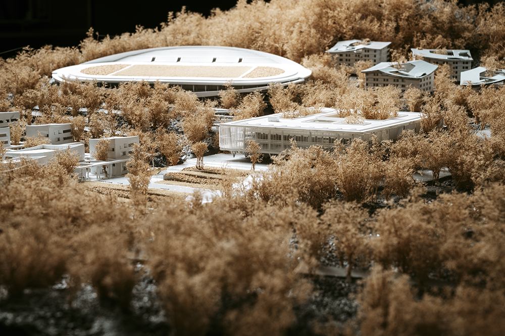
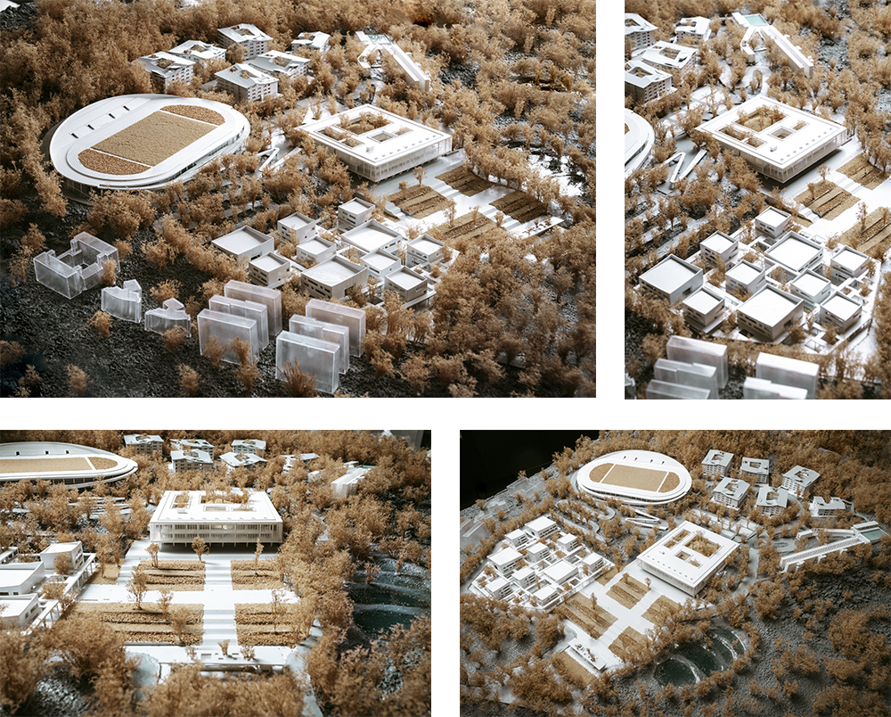

SHANTOU, CHINA
Summer 2019
Professional project with L&M Design Lab
Located on the hilly area near the coast of Shantou, the site of Shaoutou Preliminary Normal School offers unparallel opportunity to integerate learning experience into the rhythm of nature. The masterplan of the campus focuses on adapting to the existing topography and vegetation. The landscape design takes into consideration of stormwater management on the hilly site, and creates a series of terraced wetlands that enhance the ecologucal value of the area.
Participation in masterplan and landscape design, through schematic design and design development. All rights reserved by L&M Design Lab .
 